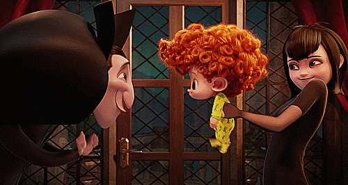

Drácula quer embarcar na missão de fazer o vampirismo de Dennis surgir, mas Mavis está em seu caminho. Ele teve uma grande ideia, qual foi?
1 - Levar Dennis ao detista de vampiros
2 - Comprar uma passagem para Mavis ir viajar com Jonathan
RESPONDER